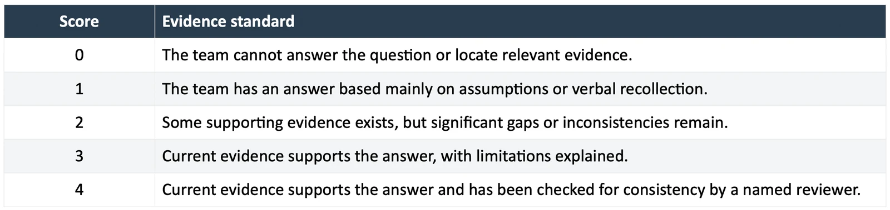
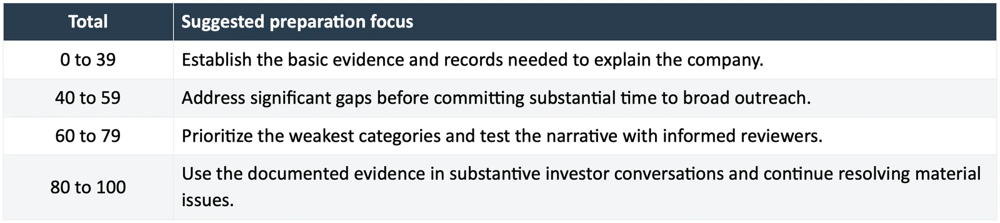

An investment readiness assessment is a structured review of the evidence supporting a startup's funding case. It helps founders identify weak assumptions, missing records, and preparation gaps before those issues dominate investor conversations.
The most useful result is a short list of decisions and work that will improve the company's preparation. A single score is only a way to organize that review.
This article provides a complete 25-question startup investment readiness assessment. You can run it with your cofounder, use it in a preparation meeting, and repeat it when new evidence becomes available.
About this scorecard: This is an educational self-assessment proposed in this article. It is not a validated prediction model, an industry certification, or MatchPlay's official investment committee methodology. A score does not estimate the probability of raising money or establish a company's value.
What the assessment measures
The scorecard examines five areas: customer and market understanding, product evidence, financial planning, team and ownership, and diligence preparation. Each area contains five questions worth up to four points, for a maximum of 100.
The same total can hide very different companies. One might have credible customer demand and weak records. Another might have excellent documentation but little evidence that customers want the product. Review the category results and material issues before interpreting the total.
For a broader preparation guide, use the investment readiness checklist for seed-stage startups.
How to run the assessment
Choose a reference date and gather the materials you would use in an investor meeting. Ideally, the founders score the questions separately before comparing answers. A disagreement can reveal where the team is relying on different assumptions.
For every question, record the answer, the supporting evidence, and any important limitation. Use the same scoring scale throughout.

A reviewer can be a colleague or an appropriate adviser. Their review should fit their competence. A cofounder's check of a customer schedule is different from counsel reviewing an ownership issue.
Give points for the supportability of the answer, including an honest account of an unfavorable result. Do not give extra points for a large market estimate, an ambitious forecast, or an attractive pitch design. Those do not establish the quality of the evidence.
1. Customer and market understanding
Maximum score: 20 points. Assess whether the team understands a specific buyer and has evidence for the opportunity it describes.
1. Can you identify the initial customer and the person who controls the purchase? Support the answer with customer research, sales conversations, or observed buying behavior.
2. Can you show how that customer handles the problem today? Record the workflow, alternatives, and reasons someone might continue using them.
3. Can you support your view of willingness to pay? Use actual purchases, pricing discussions, or clearly described tests. Distinguish expressed interest from a purchase decision.
4. Can another person reproduce your initial market estimate? Keep the buyer count, pricing assumptions, exclusions, sources, and dates together.
5. Can you explain why the company wins or loses against alternatives? Use customer feedback, competitive analysis, or results from real evaluations.
Sequoia's business-plan framework includes the problem, market, alternatives, and business model. This assessment turns those subjects into questions about the support behind your answers.
If this category is weak, choose a specific assumption to investigate. For example, verify whether the intended buyer can approve the purchase before commissioning a larger market-sizing exercise.
2. Product and commercial evidence
Maximum score: 20 points. Assess whether the product's demonstrated capabilities match the business narrative.
6. Can you demonstrate the capabilities you claim are available today? Separate released features, prototypes, manual work, and planned development.
7. Can you substantiate the most important outcome claimed for the product? Keep the measurement method, sample, test conditions, and limitations visible.
8. Can you describe the status of every relationship presented as traction? Distinguish customers, pilots, research collaborators, design partners, and prospects.
9. Can you show what has been learned over time? Use repeat usage, retention, deployment results, technical testing, or another measure appropriate to the business.
10. Can you identify the next major product or commercial uncertainty? Explain the experiment or milestone intended to address it and what result would change your plan.
A pre-revenue company should use evidence appropriate to its development stage. A technical validation study may answer question nine more usefully than a retention chart. Record the chosen interpretation before scoring and retain it for future comparisons.
If this category is weak, clarify the claim first. A narrowly supported statement about a successful test is more useful than a broad statement that the product has been validated.
3. Financial planning and use of funds
Maximum score: 20 points. Assess whether management can explain the company's present finances and the work the proposed round will fund.
11. Can you state the current cash position and material obligations? Reconcile the answer to current records and identify restricted funds or imminent payments.
12. Can you explain the financial history available for the company? Provide accounts from the relevant operating period and label incomplete periods or accounting limitations.
13. Can you connect forecast changes to operating assumptions? Show the effect of hiring, customer conversion, delivery costs, collections, and other relevant drivers.
14. Can you connect the proposed raise to measurable progress? Specify the milestone, budget, dependencies, and how completion will be demonstrated.
15. Can you explain what changes if funding or revenue arrives later than planned? Prepare a downside scenario and identify decisions that would need to happen earlier.
Y Combinator's seed fundraising guide recommends relating the raise to a credible plan and considering different funding amounts. Treat your own forecast as a decision tool with explicit assumptions.
If this category is weak, prioritize a current cash forecast and a milestone budget. A detailed five-year revenue projection will not resolve uncertainty about next quarter's payroll.
4. Team execution and ownership clarity
Maximum score: 20 points. Assess whether responsibilities and relevant ownership arrangements are understood.
16. Can you identify who owns each major operating responsibility? Record current commitments and distinguish confirmed hires from recruiting intentions.
17. Can you explain the team's relevant experience without overstating it? Connect individual experience to the work required in the next stage.
18. Can you explain current ownership and outstanding financing instruments? Use the cap table and underlying records, with assumptions identified where future conversion is modeled.
19. Can you identify the company's rights to essential technology and assets? Record ownership, licenses, dependencies, and issues that require professional review.
20. Can you identify execution gaps and a feasible plan to address them? Consider the cost, timing, and availability of the people or capabilities required.
This category assesses documented clarity, not whether the company has a conventional team structure. A solo founder can explain responsibilities well. A large founding team can still have unresolved responsibilities and conflicting expectations.
5. Diligence and investor conversation preparation
Maximum score: 20 points. Assess whether another person can examine the evidence efficiently and understand the remaining risks.
21. Can you trace the deck's important claims to supporting records? Use a claim-to-evidence index and identify the date of each supporting file.
22. Can you provide consistent answers across the deck, model, and management discussion? Document intentional differences in definitions or reporting periods.
23. Can you identify material weaknesses and explain the response? Maintain an issue register with ownership and next actions.
24. Can you explain why the investors you are approaching are relevant? Record stage, sector, geography, check-size fit, and any known portfolio conflict.
25. Can you handle a substantive follow-up request? Identify the responsible person, the source material, and the permissions needed to share it.
Cooley GO's fundraising preparation guidance recommends researching investor fit and practicing the pitch with an informed audience. Apply that preparation to follow-up questions as well as the opening presentation.
How to interpret your score
Add the five category totals. The following bands are suggested organizing labels for this exercise, not empirically established funding thresholds.

Do not describe a score of 80 as an 80 percent chance of funding. An investor may reject a thoroughly documented company because the opportunity does not fit its strategy or return requirements.
Review critical issues regardless of score. Disputed ownership, misleading claims, unclear rights to core assets, or a near-term inability to meet obligations require direct attention. A high score elsewhere cannot make those issues immaterial.
A worked example
Imagine a software startup receives the following scores: customer and market understanding 15, product evidence 12, financial planning 9, team and ownership 16, and diligence preparation 11. Its total is 63 out of 100.
The founders discover that the forecast assumes every pilot becomes a customer within the next quarter. The customer schedule also mixes paid contracts with unpaid evaluations. Those two issues matter more to the next investor conversation than improving the team's already clear biographies.
Their preparation plan could be:
1. Separate the customer schedule by commercial status and confirm it with the sales owner.
2. Rebuild the cash forecast with different pilot-conversion dates and probabilities clearly labeled as assumptions.
3. Update the deck so its commercial claims match the corrected schedule.
4. Ask a finance adviser to review the forecast and record the remaining limitations.
A better score at the next review should follow new evidence or a meaningful correction. Merely changing the wording of an answer does not justify more points.
Frequently asked questions
What is a good investment readiness score
There is no universal score that establishes investment readiness. In this exercise, use the total to organize preparation and the category scores to find weaknesses. The quality of the business and an investor's judgment remain separate questions.
Can pre-revenue startups use this assessment
Yes. Use evidence suited to the development stage and state that the company is pre-revenue. For commercial questions, explain the validation available and what remains untested. Do not invent revenue equivalents or award points for unsupported expectations.
How often should founders repeat the assessment
Repeat it when significant evidence changes, such as a completed pilot, updated financial records, or a change in financing plans. Keeping the same question interpretations makes comparison more useful than repeating it on an arbitrary schedule.
Is this the same as an investment readiness level
Different organizations use different readiness frameworks and scales. This article uses a 25-question evidence review. It should not be presented as an accredited readiness level or as equivalent to another organization's methodology.
Turn the assessment into a preparation plan
For each priority gap, write down the evidence needed, the owner, and the decision it will inform. Use the transaction readiness checklist for execution work and apply to MatchPlay to begin its founder review process.